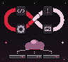

Материалы
Главные темы по каждому языку и инструменту направления «DevOps» — коротко и с примерами кода. Нажми на название, чтобы открыть темы.
Навигация
pwd показывает, где ты находишься, ls — что лежит в папке, cd — переходит в другую папку.
pwd
ls -la
cd /var/logФайлы
Команды для просмотра, копирования, переименования и удаления файлов.
cat notes.txt
cp notes.txt backup.txt
mv backup.txt old.txt
rm old.txtПроцессы и службы
ps показывает запущенные программы, systemctl управляет службами вроде веб-сервера.
ps aux | grep nginx
sudo systemctl restart nginx
sudo systemctl status nginxЛоги
Логи помогают понять, почему сервис упал. journalctl показывает журнал службы.
journalctl -u nginx --since today
tail -f /var/log/nginx/error.logОбраз и контейнер
Образ — шаблон приложения, контейнер — запущенная копия образа. Готовые образы берут с Docker Hub.
docker pull nginx
docker run -d -p 8080:80 nginxDockerfile
Рецепт сборки своего образа: на чём основан, какие файлы скопировать, какую команду запустить.
FROM python:3.12-slim
WORKDIR /app
COPY . .
RUN pip install -r requirements.txt
CMD ["python", "app.py"]Сборка и запуск
build собирает образ из Dockerfile, run запускает контейнер.
docker build -t my-app .
docker run --name my-container -p 8000:8000 my-appУправление контейнерами
Посмотреть запущенные контейнеры, их логи и остановить.
docker ps
docker logs my-container
docker stop my-containerDocker Compose
Запускает сразу несколько контейнеров, например приложение и базу данных, по описанию в одном файле.
services:
web:
build: .
ports:
- "8000:8000"
db:
image: postgres:16
environment:
POSTGRES_PASSWORD: exampleФайл .gitlab-ci.yml
Конвейер описывают в файле в корне репозитория. stages задаёт порядок этапов.
stages:
- test
- deployЗадачи
Задача — набор команд на этапе. GitLab запускает их при каждом изменении кода.
test:
stage: test
script:
- pytestВыкладка только из main
Через rules задают, когда запускать задачу, например только для ветки main.
deploy:
stage: deploy
script:
- ./deploy.sh
rules:
- if: $CI_COMMIT_BRANCH == "main"Поды
Под — минимальная единица Kubernetes: один или несколько контейнеров, которые работают вместе.
kubectl get podsDeployment
Описывает, какой образ запустить и в скольких копиях. Kubernetes сам следит, чтобы копий было столько.
apiVersion: apps/v1
kind: Deployment
metadata:
name: my-app
spec:
replicas: 3
selector:
matchLabels:
app: my-app
template:
metadata:
labels:
app: my-app
spec:
containers:
- name: web
image: nginx:1.27Применение и масштабирование
apply создаёт всё по описанию из файла, scale меняет число копий.
kubectl apply -f deployment.yaml
kubectl scale deployment my-app --replicas=5Service
Даёт подам постоянный адрес внутри кластера, даже когда сами поды пересоздаются.
apiVersion: v1
kind: Service
metadata:
name: my-app
spec:
selector:
app: my-app
ports:
- port: 80Ресурсы
Сервер, сеть или база в облаке описываются блоком resource.
resource "aws_instance" "web" {
ami = "ami-12345678"
instance_type = "t3.micro"
}Главные команды
init готовит проект, plan показывает, что изменится, apply применяет изменения.
terraform init
terraform plan
terraform applyПеременные
Повторяющиеся значения выносят в переменные.
variable "region" {
default = "eu-central-1"
}Метрики
Метрика — число, которое сервис отдаёт для наблюдения, например сколько запросов он обработал.
http_requests_total{method="GET", status="200"} 1027Запросы PromQL
На языке PromQL считают, например, сколько ошибок 500 приходит в секунду за последние 5 минут.
rate(http_requests_total{status="500"}[5m])Оповещения
Правило оповещения срабатывает, если условие держится дольше заданного времени.
groups:
- name: app
rules:
- alert: HighErrorRate
expr: rate(http_requests_total{status="500"}[5m]) > 1
for: 5m